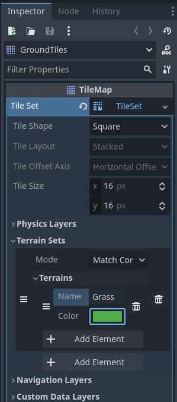
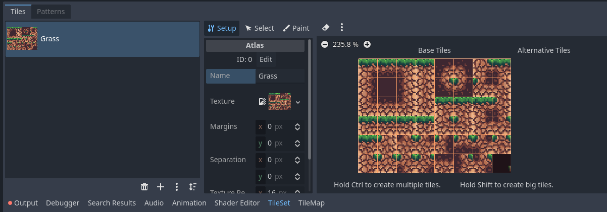
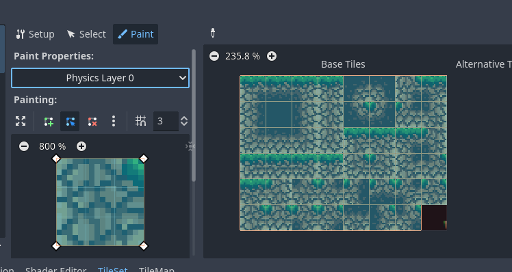
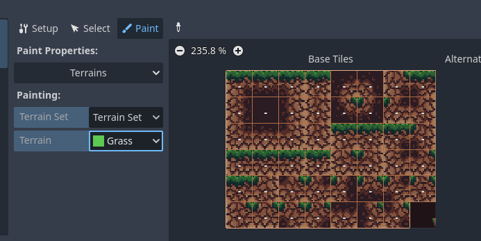
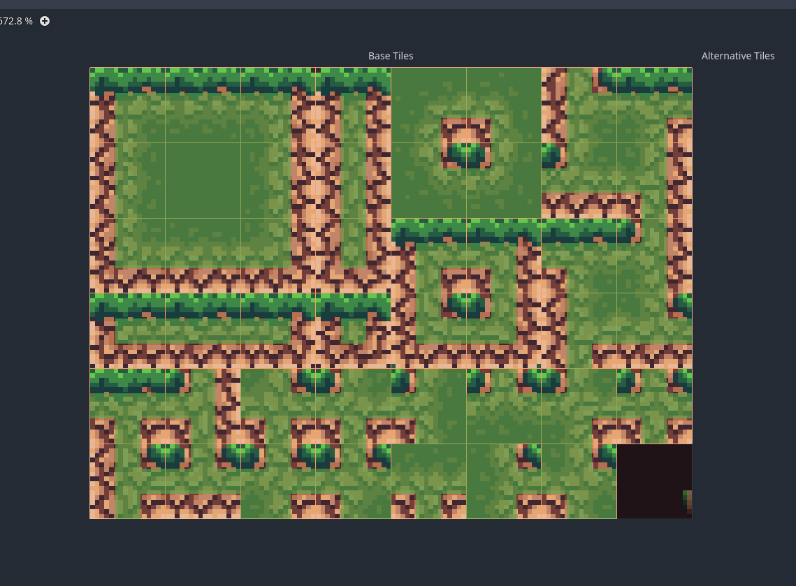
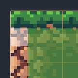

Prettier Tiles
Despite their appeal, you may be sick of seeing the stone tile we have been using (I have been told they look suspiciously like baked beans.) Fortunately, we do not need to stick with them. While a game does not need incredibly complicated or detailed artwork, it is still vital for a game to be pleasing to look at! On this page we will implement a much improved tile set, as well as explore how to use Godot's auto-tiling feature.
Updating the Ground Tiles
First thing's first, we need to explore what a tile set is. While we have been using a tile, the true power of tile sets come from having multiple 'tiles' on a single sprite. We can use a tile set like a palette of tiles to paint our level. To get started we need to import at least one tile set from the Prettier Tiles folder in your VGDC-2024 Assets folder.
If you are not taking this course in person, you can download the assets Here
You may of noticed there are many different tilesets. That is on purpose. We will be able to use them all in combination to make far more detailed (and visual appealing) levels. To start with choose either the grass or stone tileset, whichever one you think you will use more, and we will use that for our auto tiling.
While it is possible to set up auto-tiling on multiple tilesets, there is no way for Godot to be able to connect them together (at least by default.) As such, if you need to connect multiple tileset, you will need to manually add tiles.
Navigate to your ground tiles scene. Select the GroundTiles node and then the tile set in the inspector. Go to the terrain sets section and add a new element, then inside of the new terrain set add a new element. This is our terrain, Godot's autotiling functionality. Go ahead and rename the terrain (I named mine grass) and change its color to something brighter to make it easier to see later.
Next go to the bottom bar with the tile set selected. Go to the tileset tab. You can delete the stone block tile, then press the + symbol and create a new atlas. Import the tileset you choose, and select yes on the popup to automatically create the tiles. It should then look something like this:
Then go to the paint tab in the center of the tileset bar. Under paint properties choose physics layer 0, then paint on each tile like so:
Finally, to setup the auto tiling we need to let Godot know how we want the tiles to interact with one another. We can do this by selecting the terrain paint property and selecting the terrain set and terrain we want to use like so:
Though to actually communicate how the tiles connect is a bit more complicated. I'll show you what it looks like and then (try) and describe what it actually is doing.
There is a lot going on here. Each tile is broken up into nine squares. Each colored square represents a neighboring tile and each empty square represents an empty space, with the center square representing the tile itself. Godot uses these as a model to decide where each tile should go. For example:
Godot will choose this tile when there is a tile below, to the right and in the bottom right corner of the selected tile, and there are no tiles in any other adjacent squares.
The terrains feature can be pretty hard to wrap your head around, so if you want to look deeper into it you can check out Godot's tutorial Here
To add your tiles to your levels, go to your level and select the ground tiles node. In the tile map tab in the bottom bar select terrains and then your new terrain. You can now paint the tiles out like before, but now they should be automatically connecting!
Prettier Platforms
This module requires the Platforms module. Navigate to the ground tiles scene. Select the tile set in the inspector then go to the tile set tab in the bottom bar. Create a new atlas using one of the platform tile sets. Select yes on the popup to automatically create tiles, then name the new tile set. Go to the paint properties and select the physics layer 0 property. In the new options that appear modify the collision shape to be about 1/3 of a tile tall and check the polygon_0_one_way property. Finally, paint the collision shape on all the tiles that have full tops like so:

I did not set the platforms to have a terrain on purpose in order to not have them try and connect or replace the grass tileset. As such, we will need to place these tiles manually.
And that is it! Congrats! Autotiling can be pretty complex but you did it! Go ahead and piece together some test levels and then move on to another module!